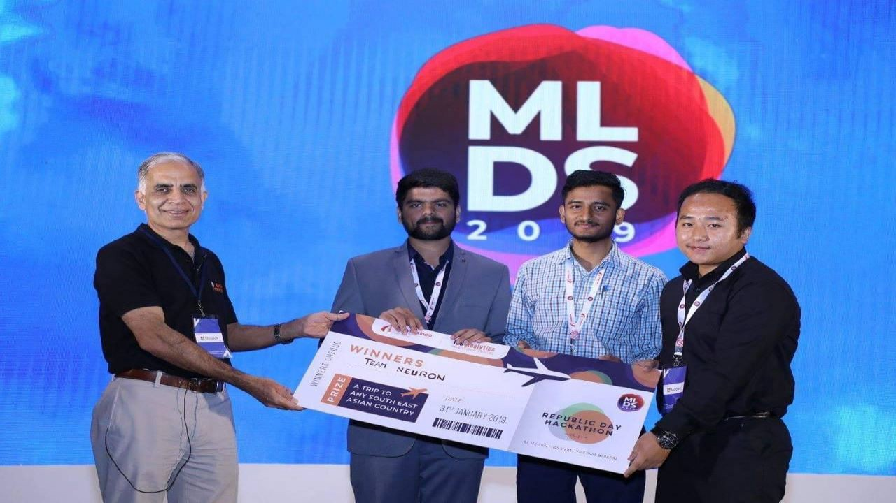

Journey Into Winning My First Data Science Hackathon
By Samden Lepcha in Data Science
November 30, 2021

Introduction
In this article, I will be talking about my journey from knowing next to nothing about Data Science to winning a Data Science Hackathon 6 months later. This is just my journey and I am not really recommending this as a path to follow. Everyone has their own circumstances so it’s more important that you start and continue to work towards your goals and most importantly that you enjoy the process. I found this really apt quote for what I am trying to convey:
“The journey is the destination.” by Dan Eldon
Main Story
So, officially I was introduced to Data Science by my seniors in my second year of college. I had heard a lot about Data Science before that but never really took the time to understand it seriously. So my seniors conducted an introductory session on Machine Learning showcasing a few algorithms with some practical examples on different datasets. In the end, we were given a dataset that contained features on the chemical composition of different wines and we had to predict or classify the quality of wine on a scale of 0 to 10. This dataset is widely known as one of the beginner ML datasets called Wine Quality Data Set.
Image source: PYPL PopularitY of Programming Language.
Wanting to learn more on this, I took a course on Python to first get myself familiarized with a programming language associated with data science. According to the PYPL Popularity ranking of Programming language, Python ranks as the most popular language as of June 2021. After getting familiar with the language I wanted to understand the fundamentals from the ground up.
After researching online and with the suggestions from my friends I took up the famous Andrew Ng course on Machine Learning. It’s a great course for beginners as well as people with intermediate knowledge for understanding the fundamentals of Machine Learning. I highly recommend all the new folks to have a look at that course. After this to broaden my knowledge on Deep Learning you might have guessed it, I enrolled in the Deep Learning Specialization course also taught by Andrew Ng. There were various other courses and tutorials along the way but these were the courses that stood out and set the path for me.
After completing all these courses, my roommate and I took part in several hackathons and also worked on a few projects. An early reality check for all you aspiring data science enthusiasts is that completing courses is not enough to work with data and build statistical models that have high accuracy. In the real world, most of the time spent by Data Scientists is on Data Preparation and a very small percentage of the time is spent on using the algorithms. According to an article by Forbes, Data scientists spend 60% of their time on cleaning and organizing data. Not everyone will get the chance to use the state of the art machine learning algorithms, you might end up just using primitive models like linear or logistic regression.
Image source: Forbes
It was disheartening when we would take part in these hackathons and not really secure a rank anywhere close to the top 10% let alone winning. I was naive at the time and thought that completing a few courses will grant me the ability to derive groundbreaking insights or have models with above 90% accuracy or any other high metric.
It was then my roommate had found a hackathon in a newly developed Indian-based competition or hackathon website known as Machine Hack. The title of this hackathon was ”Republic Day Hackathon by TEG Analytics And AIM”.
Image source: Machine Hack
It was a fresh start, a new data science hackathon where we would try our best again and hopefully get somewhere closer to winning than our previous attempts. The Grand Prize stated that the entire team will get an International Trip for 4 days and 5 nights to anywhere in South East Asia. We could already see the different places that we could visit if we managed to win this time.
The hackathon finale was scheduled for the 28th of January and we had one week to make something happen. There was a holiday right before the weekend and we intended to utilize every hour that we could get.
Since the problem statement of the hackathon was ”Predicting Market Competitiveness for Medicare Insurance Products” or in layman’s terms “Predict the enrollments of each insurance plan” we had to gain some domain knowledge since we did not have any prior knowledge on this field. Therefore for the first two days, we decided to scour the internet and understand what “Medicare” is. We needed to understand what the beneficiaries needed or preferred and how the Medicare Advantage companies structure their plans.
Some really good resources were :
- Q1 Medicare Website
- Kaiser Family Foundation Website
- Obviously Medicare’s Official Website
- and Deft Research Website
After understanding some of the domain cost-sharing terms such as “Deductible”, “Copayment”, “Co-insurance”, “MOOP (Maximum Out of Pocket Cost)” etc, we then decided to indulge in the datasets provided.
The datasets provided consisted of three levels of information:
- Plan Level Information
- Benefit Level Information
- Enrollment numbers at the State County Level
We invested some time on the benefit level data but due to college work (internal exams and assignments), we could not decode this information and convert it into a form that we could have used. We then spent our remaining time on the plan level information also known as the Landscape file which contained information on the Demographics, Plan Cost Information, and unique plan identifiers known as bid id.
The Image below showcases our entire workflow or approach for this hackathon.
Photo: Hackathon Workflow
After performing all the usual data science processes such as EDA, Preprocessing it was the modeling (P.S. If you want more technical information and methodology you can visit my GitHub repo). It was obviously a regression problem where we were predicting a continuous variable i.e the number of enrollments.
After numerous iterations we ended up using a Stacked model and the implementation was performed using StackNet by Kaz-Anova (He was once the Highest Level Grandmaster in Kaggle). Check out his amazing repository and we used the Python Implementation by H20.ai found here. The new stacked model with the addition of the Lag variable that they provided on the last day of the hackathon enabled us to secure a Top 3 position on the Leaderboard.
Photo: Leader board of the Hackathon
This meant that we had qualified for the final phase of the Hackathon which was gonna take place in the Machine Learning Developers Summit 2019. We had cleared most of the hurdles but now it was time for the bigger stage. It was kind of nerve-racking to think now we had to present in front of hundreds of people. But nonetheless. we put our best efforts into making a presentation for this event. One tip for anybody taking part in a data science hackathon is not to keep very little time for the presentation. It is only through the presentation that you can convey your solution so allocate an appropriate amount of time for it as well. It was a long commute to the event destination and all along the way, we were practicing our presentation lines.
After making it to the event place and meeting the organizing team and the competitors(1st and 2nd place teams) it was time for our presentation. We had lost some bit of confidence when we found out that our competitors were a team of professional data scientists while we were just a couple of data science enthusiasts at best. However, we still decided to give it our all and went on to present in front of a massive audience.
Image of Author during presentation
We then waited and watched the competitor’s presentations as well and found out surprisingly that they did not do anything that was extraordinary. In fact, their approach was very similar to what we had done.
The results were to be announced at the final program of the event where they were awarded all the exceptional people in Data Science from various companies and universities. It was then with a little bit of suspense(cliché) that they announced the winners of the hackathon. You can already guess that the winners turned out to be none other than my team “Neuron”. The image above the title is the team receiving the award from the CEO of TEG Analytics.
You can find the code in my Github repository, the video of our presentation on Youtube, and the article published by Analytics India Magazine.
With the prize, I ended up choosing Bali as my destination and it was an unforgettable experience.
Photo was taken at Broken Beach, Nusa Penida, Bali by Author
- Posted on:
- November 30, 2021
- Length:
- 7 minute read, 1473 words
- Categories:
- Data Science
- Tags:
- scikit-learn Python